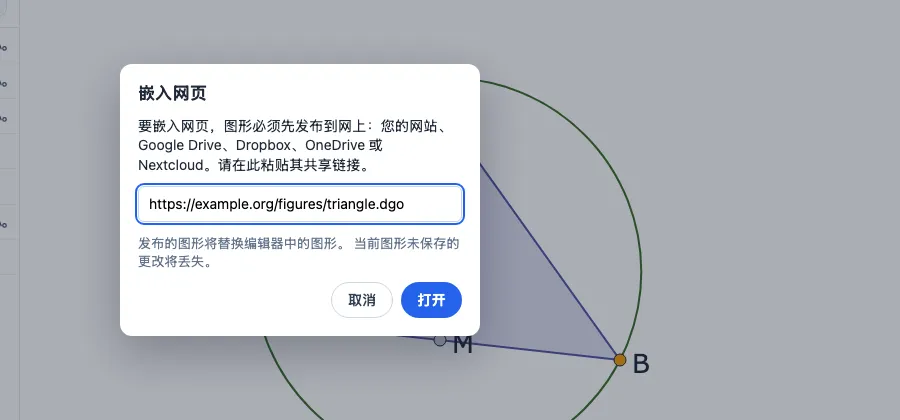
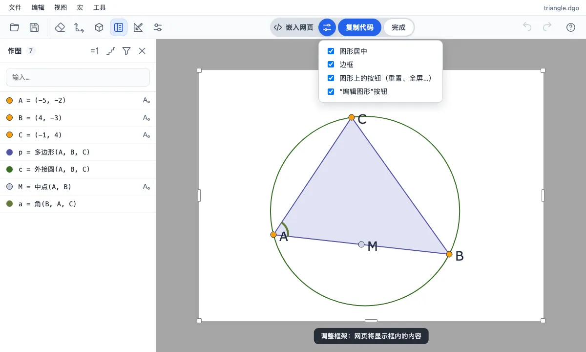

嵌入网页
DocGeo 图形可以显示在任何网页中——您的网站、Moodle 课程、博客——并在其中像在 DocGeo 中一样操作。只需把编辑器准备好的代码粘贴到网页的 HTML 中。图形会适应网页的宽度，在手机上也一样。
原理
网页并不包含图形：每次显示时，它都会到您在网上发布图形的位置去读取。因此：
- 必须先把图形放到网上，就像通过链接分享一样；
- 要更新网页，只需替换已发布的文件：所有嵌入该图形的网页都会立即显示新版本，无需修改它们的代码。
分步操作
-
保存图形（Ctrl S），然后把
.dgo文件放到网上：您的网站、Google Drive、Dropbox、OneDrive 或 Nextcloud。复制其共享链接。 -
选择文件 › 嵌入网页…。如果图形不是通过链接打开的，DocGeo
会询问链接：粘贴后点击打开。已发布的图形随即替换编辑器中的图形，从而确保代码可以正常工作。

- 图形上会出现一个框：网页将准确显示框内的内容。拖动其控制点（四角和各边中点）可调整大小，拖动其边缘或标签可移动它。取景时，您也可以缩放、移动视图或旋转三维图形；图形仍可操作。
-
如有需要，用复制代码左侧的按钮设置选项。

- 点击复制代码，然后把代码粘贴到网页的 HTML 中。
- 完成或 Esc 移除该框。
选项
| 选项 | 作用 |
|---|---|
| 图形居中 |
用
<center>
包住代码：图形在网页中居中。
|
| 边框 | 图形周围的一条灰色细线。 |
| 图形上的按钮 | 图形右上角的一个小工具条，鼠标移到图形上时显示：重置图形、全屏显示。 |
| “编辑图形”按钮 | 在该工具条上添加一个按钮，在新标签页中用编辑器打开图形。例如，不希望学生看到作图过程时，可取消勾选。 |
所有选项起初都已勾选；您的选择会保留到关闭编辑器为止。
要粘贴的代码
复制的代码类似这样：
<center><iframe
src="https://…/index.html?fit=704,512,…&url=https://…/triangle.dgo"
style="width:704px;max-width:100%;aspect-ratio:704/512;border:1px solid #ccc"
allow="fullscreen" loading="lazy"></iframe></center>
要改变图形在网页中的大小，只需修改
width（单位为像素）：高度随之变化，图形保持框的比例。在较窄的屏幕上（例如手机），图形会自动缩小（max-width:100%）。只有想让图形所占区域换一种形状时才修改
aspect-ratio，图形在其中仍完整显示并居中。fit=
后面的数字描述图形显示的内容，而不是它的大小：请不要修改。
把代码粘贴到网页接受 HTML 的地方：直接写进
.html 文件、WordPress 的“自定义 HTML”区块，或
Moodle 文本编辑器的 HTML（源代码）模式。
在网页中
在网页中，图形的操作方式与 DocGeo 相同：点、滑动条、复选框、按钮……在空白处拖动可移动视图，三维时则旋转视图。鼠标滚轮会像在其他地方一样滚动网页；要缩放图形，请使用 Ctrl + 滚轮，或在触控板上双指捏合。
右上角的按钮可以重置图形（恢复为网页打开时的样子）、全屏显示，在勾选了相应选项时，还可以在编辑器中打开图形。

更新嵌入的图形
通过链接在编辑器中打开图形（例如使用网页上的“编辑图形”按钮），修改并保存，然后在同一位置替换已发布的文件，保留其链接：在 Google Drive 上，上传文件的新版本；在 Dropbox、OneDrive 或 Nextcloud 上，把新文件以相同名称放进同一文件夹。所有嵌入该图形的网页随即显示新版本，无需修改其代码。
如果只想改变取景，请再次选择文件 › 嵌入网页…并复制新代码：已发布的文件无需改动。
如果图形在通过链接打开后在编辑器中被修改过，DocGeo 会在显示框之前提醒：在替换已发布的文件之前，网页显示的仍是旧版本。
如果图形没有显示
- 链接必须是公开的：Google Drive 上设为“知道链接的任何人”，Nextcloud 上使用不带密码的链接。
-
有些平台会从粘贴的 HTML 中删除
<iframe>，或只允许某些网站、某些用户使用：请检查您所用平台的设置。 -
从安装在您电脑上的 DocGeo（地址为
localhost）复制的代码只能在这台电脑上使用：请从在线编辑器复制代码。 -
只有当
<iframe>带有allow="fullscreen"属性时才会出现全屏按钮，复制的代码中已包含该属性。